Creating Maps from Data in a Projected x-y System
This gallery illustrates the range of maps that you can create using mapshow.
Contents
- Map 1: Concord Roads - A Geographic Data Structure
- Map 2: Concord Roads with Custom LineStyle
- Map 3: Concord Roads with SymbolSpec
- Map 4: Concord Roads, Override SymbolSpec
- Map 5: Boston Roads with SymbolSpec, Override Defaults
- Map 6: GeoTIFF Image of Boston
- Map 7: Pond with Islands over Orthophoto Backdrop
- Map 8: Mount Washington SDTS Digital Elevation Model
- Map 9: Mount Washington and Mount Dartmouth on One Map with Contours
- Credits
Map 1: Concord Roads - A Geographic Data Structure
Display a geographic data structure array with lines representing roads. In the shapefile 'concord_roads.shp', the road coordinates have been pre-projected to the Massachusetts Mainland State Plane system (in meters), so the shapefile is imported into a mapstruct (the variable 'roads').
roads = shaperead('concord_roads.shp'); figure mapshow(roads); xlabel('easting in meters') ylabel('northing in meters')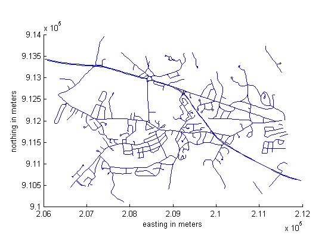
Map 2: Concord Roads with Custom LineStyle
Display the roads shape and change the LineStyle.
figure mapshow('concord_roads.shp','LineStyle',':'); xlabel('easting in meters') ylabel('northing in meters')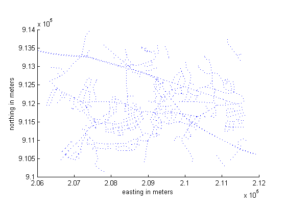
Map 3: Concord Roads with SymbolSpec
Display the roads shape, and render using a SymbolSpec.
To learn about the concord_roads.shp dataset, read its associated concord_roads.txt metadata file which describes the attributes.
type concord_roads.txt
A shapefile data set for roads in part of Concord, Massachusetts,
USA comprising the following files:
concord_roads.dbf
concord_roads.shp
concord_roads.shx
Source
------
Office of Geographic and Environmental Information (MassGIS),
Commonwealth of Massachusetts Executive Office of Environmental Affairs
(http://www.state.ma.us/mgis/)
Coordinate system/projection
----------------------------
All data distributed by MassGIS are registered to the NAD83 datum,
Massachusetts State Plane Mainland Zone coordinate system. Units are in
meters.
Data set construction
---------------------
This data set was constructed by concatenating Massachusetts Highway
Department road shapefiles for the Maynard and Concord USGS Quadrangles,
from compressed files mrd97.exe and mrd104.exe.
Features were selected with bounding boxes intersecting the following
box:
[206500 (min easting) 910500 (min northing)
211500 (max easting) 913500 (max northing)]
The following attributes were retained:
'STREETNAME', 'RT_NUMBER', 'CLASS', 'ADMIN_TYPE', 'LENGTH'
Attributes 'CLASS' and 'ADMIN_TYPE' contain numerical codes defined by
MassGIS as follows:
Road classes (from file mrdac.dbf)
----------------------------------
CLASS 1 Limited access highway
CLASS 2 Multi-lane highway, not limited access
CLASS 3 Other numbered route
CLASS 4 Major road - collector
CLASS 5 Minor street or road
CLASS 6 Minor street or road
CLASS 7 Highway ramp
Road admin types (from file mrdac.dbf)
--------------------------------------
ADMIN_TYPE 0 Local road
ADMIN_TYPE 1 Interstate
ADMIN_TYPE 2 U.S. Federal
ADMIN_TYPE 3 State
Construction date
-----------------
November 17, 2003.
Query the attributes in this roads file.
roads = shaperead('concord_roads.shp')
roads =
609x1 struct array with fields:
Geometry
BoundingBox
X
Y
STREETNAME
RT_NUMBER
CLASS
ADMIN_TYPE
LENGTH
Find out how many roads fall in each CLASS.
histc([roads.CLASS],1:7)
ans =
0 14 93 26 395 81 0
Find out how many roads fall in each ADMIN_TYPE.
histc([roads.ADMIN_TYPE],0:3)
ans = 502 0 0 107
Notice that there are no roads in this file that are CLASS 1 or 7, and the roads are either ADMIN_TYPE 0 or 3.
Create a SymbolSpec to:
- Color local roads (ADMIN_TYPE=0) black.
- Color state roads (ADMIN_TYPE=3) red.
- Hide very minor roads (CLASS=6).
- Set major or larger roads (CLASS=1-4) with a LineWidth of 2.0.
roadspec = makesymbolspec('Line',... {'ADMIN_TYPE',0, 'Color','black'}, ... {'ADMIN_TYPE',3, 'Color','red'},... {'CLASS',6, 'Visible','off'},... {'CLASS',[1 4], 'LineWidth',2}); figure mapshow('concord_roads.shp','SymbolSpec',roadspec); xlabel('easting in meters') ylabel('northing in meters')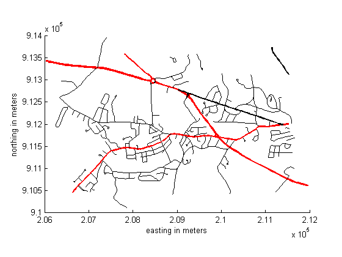
Map 4: Concord Roads, Override SymbolSpec
Override a graphics property of the SymbolSpec.
roadspec = makesymbolspec('Line',... {'ADMIN_TYPE',0, 'Color','black'}, ... {'ADMIN_TYPE',3, 'Color','red'},... {'CLASS',6, 'Visible','off'},... {'CLASS',[1 4], 'LineWidth',2}); figure mapshow('concord_roads.shp','SymbolSpec',roadspec,'Color','black'); xlabel('easting in meters') ylabel('northing in meters')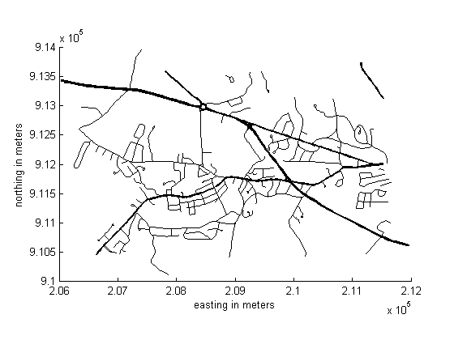
Map 5: Boston Roads with SymbolSpec, Override Defaults
Override default property of the SymbolSpec.
roadspec = makesymbolspec('Line',... {'Default', 'Color','green'}, ... {'ADMIN_TYPE',0, 'Color','black'}, ... {'ADMIN_TYPE',3, 'Color','red'},... {'CLASS',6, 'Visible','off'},... {'CLASS',[1 4], 'LineWidth',2}); figure mapshow('boston_roads.shp','SymbolSpec',roadspec); xlabel('easting in meters') ylabel('northing in meters')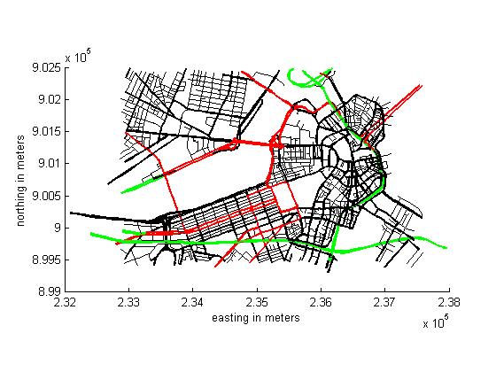
Map 6: GeoTIFF Image of Boston
Display the Boston GeoTIFF image; includes material (c) GeoEye™, all rights reserved.
figure mapshow boston.tif axis image off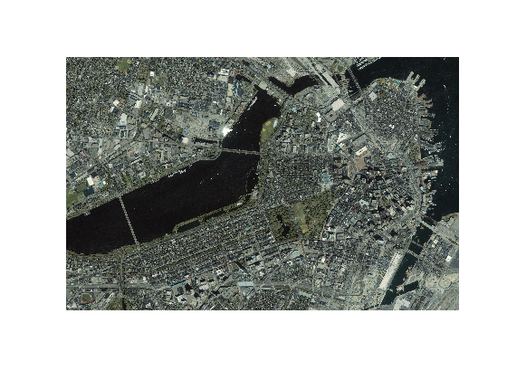
Read Boston placenames in order to overlay on top of the GeoTIFF image.
S = shaperead('boston_placenames.shp');
The projection in the GeoTIFF file is in units of survey feet. The point coordinates in the shapefile are in meters. Therefore, we need to convert the placename coordinates from meters to survey feet in order to overlay the points on the image.
surveyFeetPerMeter = unitsratio('sf', 'meter'); for k = 1:numel(S) S(k).X = surveyFeetPerMeter * S(k).X; S(k).Y = surveyFeetPerMeter * S(k).Y; end
Display the placenames.
text([S.X], [S.Y], {S.NAME}, ...
'Color',[0 0 0],'BackgroundColor',[0.9 0.9 0]);
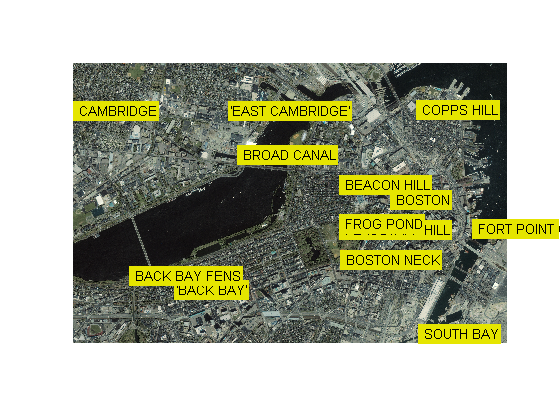 Zoom in on a selected region.
set(gcf,'Pos', [5, 50, 1900, 1000]); set(gca,'XLim',[ 772007, 775582], ... 'YLim',[2954572, 2956535]);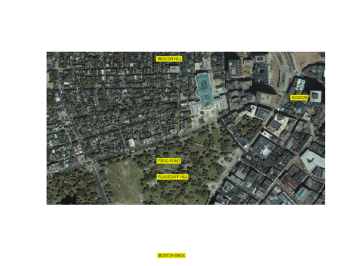
Map 7: Pond with Islands over Orthophoto Backdrop
Display a pond with three large islands (feature 14 in the concord_hydro_area shapefile). Note that islands are visible in the orthophoto through three "holes" in the pond polygon. Display roads in the same figure.
[ortho, cmap] = imread('concord_ortho_w.tif'); R = worldfileread('concord_ortho_w.tfw', 'planar', size(ortho)); figure mapshow(ortho, cmap, R)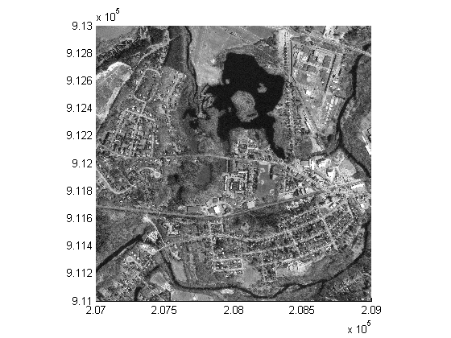
Save map limits used for image
xLimits = get(gca,'XLim'); yLimits = get(gca,'YLim'); pond = shaperead('concord_hydro_area.shp', 'RecordNumbers', 14); hold on mapshow(pond, 'FaceColor', [0.3 0.5 1], 'EdgeColor', 'black') mapshow('concord_roads.shp', 'Color', 'red', 'LineWidth', 1); xlabel('easting in meters') ylabel('northing in meters')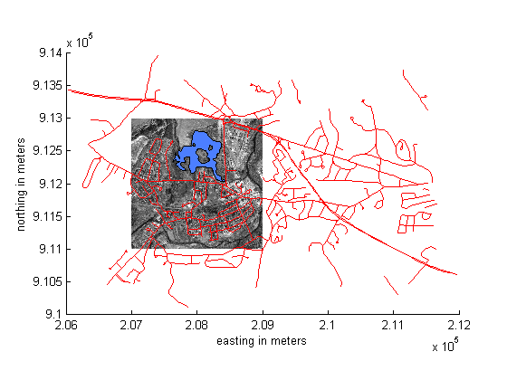
Restore map limits to match image
set(gca,'XLim',xLimits,'YLim',yLimits)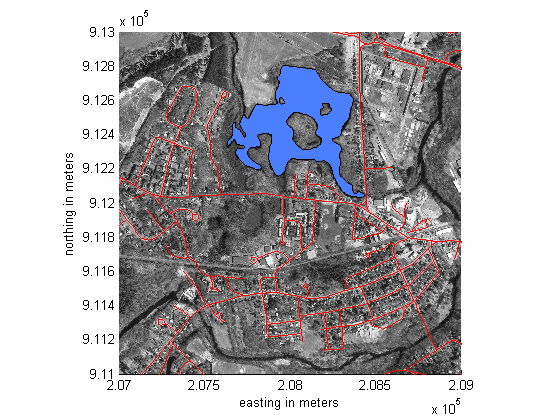
Map 8: Mount Washington SDTS Digital Elevation Model
View the Mount Washington terrain data as a mesh. The data grid is georeferenced to Universal Transverse Mercator (UTM) zone 19.
figure h = mapshow('9129CATD.ddf','DisplayType','mesh'); Z = get(h,'ZData'); demcmap(Z) xlabel('UTM easting in meters') ylabel('UTM northing in meters')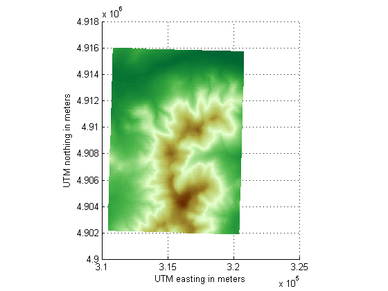
View the Mount Washington terrain data as a 3-D surface. Use the default 3-D view, which shows how the range looks from the southwest.
figure mapshow('9129CATD.ddf'); demcmap(Z) view(3); axis equal; xlabel('UTM easting in meters') ylabel('UTM northing in meters') zlabel('Elevation in feet')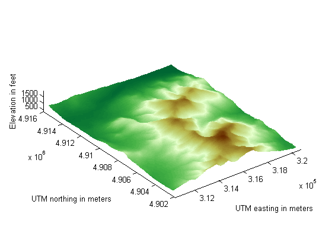
Map 9: Mount Washington and Mount Dartmouth on One Map with Contours
Display the grid and contour lines of Mount Washington and Mount Dartmouth.
Read the terrain data files.
[Z_W, R_W] = arcgridread('MtWashington-ft.grd'); [Z_D, R_D] = arcgridread('MountDartmouth-ft.grd');
Display the terrain data as a surface.
figure('Renderer', 'zbuffer') hold on mapshow(Z_W, R_W, 'DisplayType', 'surface'); mapshow(Z_D, R_D, 'DisplayType', 'surface'); demcmap(Z_W) xlabel('UTM easting in meters') ylabel('UTM northing in meters')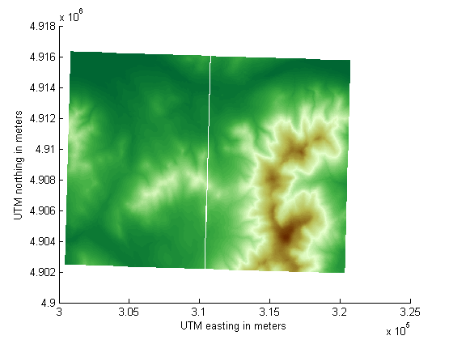
Overlay black contour lines with labels onto the surface. Set the Z values of the contours to the maximum value of the corresponding surface.
cW = mapshow(Z_W, R_W, 'DisplayType', 'contour', ... 'LineColor', 'black', 'ShowText', 'on'); cD = mapshow(Z_D, R_D, 'DisplayType', 'contour', ... 'LineColor', 'black', 'ShowText', 'on'); zdatam(get(cW,'Children'), max(Z_W(:))); zdatam(get(cD,'Children'), max(Z_D(:))); axis equal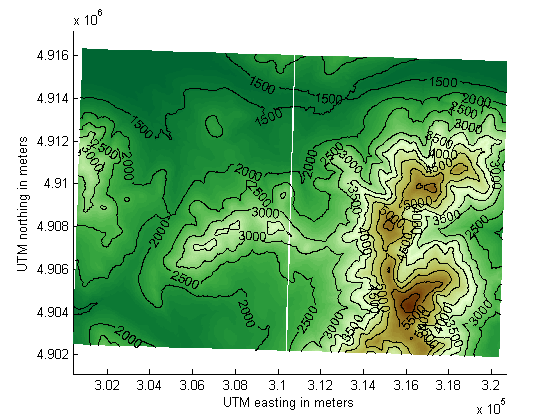
Credits
boston_roads.shp, concord_roads.shp, concord_hydro_line.shp, concord_hydro_area.shp, concord_ortho_e.tif:
Office of Geographic and Environmental Information (MassGIS), Commonwealth of Massachusetts Executive Office of Environmental Affairs http://www.state.ma.us/mgis
boston.tif
Copyright GeoEye Includes material copyrighted by GeoEye, all rights reserved. For more information, please call 1.703.480.7539 or visit http://www.geoeye.com
For more information, run:
>> type boston.txt
9129CATD.ddf (and supporting files):
United States Geological Survey (USGS) 7.5-minute Digital Elevation Model (DEM) in Spatial Data Transfer Standard (SDTS) format for the Mt. Washington quadrangle, with elevation in meters. http://edc.usgs.gov/products/elevation/dem.html
For more information, run:
>> type 9129.txt
MtWashington-ft.grd, MountDartmouth-ft.grd:
MtWashington-ft.grd is the same DEM as 9129CATD.ddf, but converted to Arc ASCII Grid format with elevation in feet.
MountDartmouth-ft.grd is an adjacent DEM, also converted to Arc ASCII Grid with elevation in feet.
For more information, run:
>> type MtWashington-ft.txt >> type MountDartmouth-ft.txt